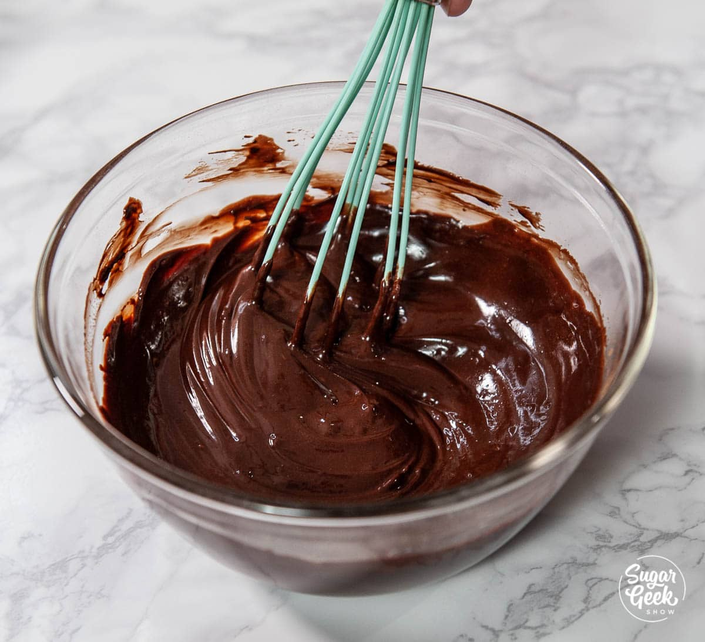
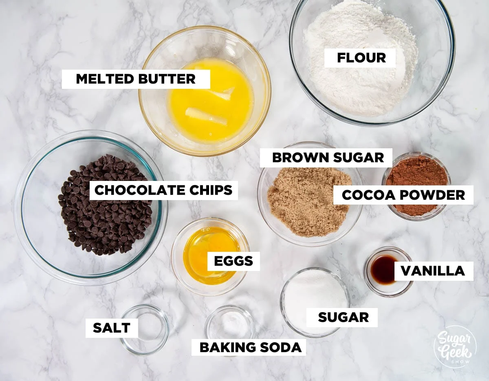
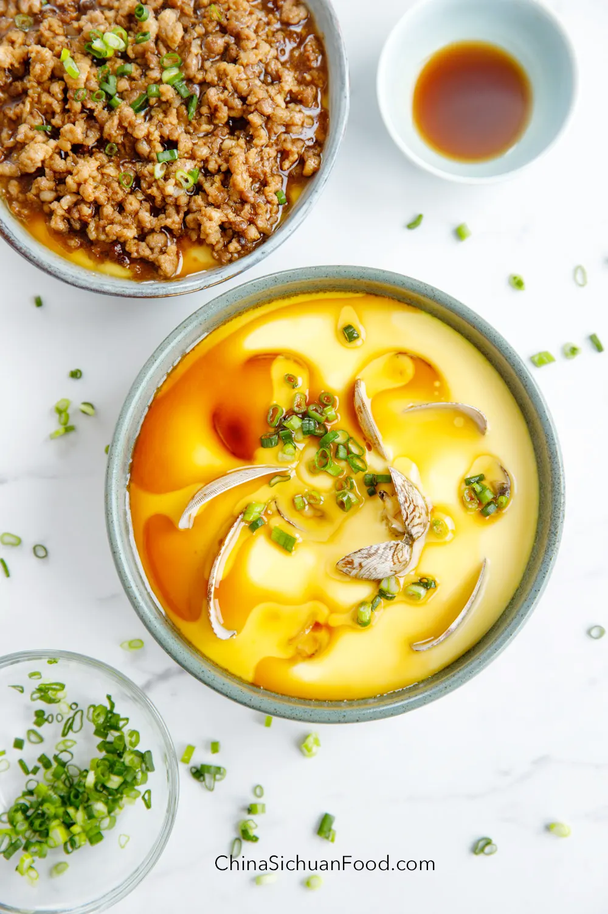
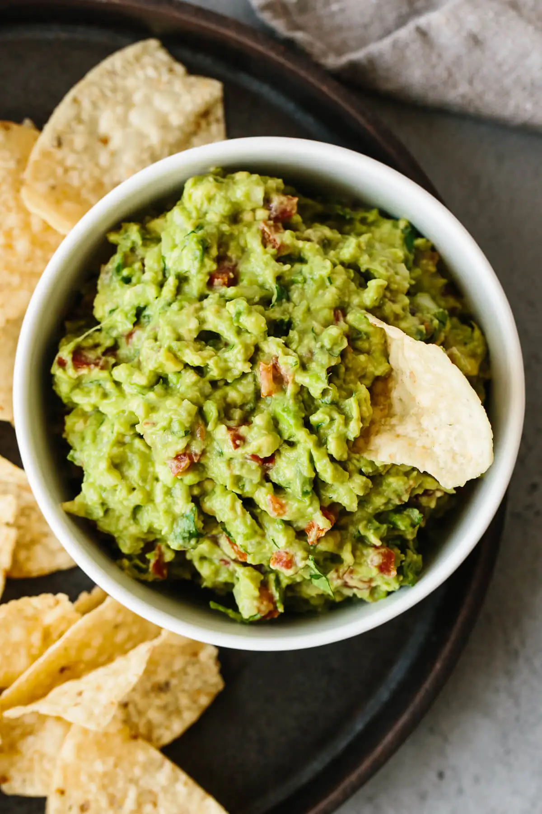
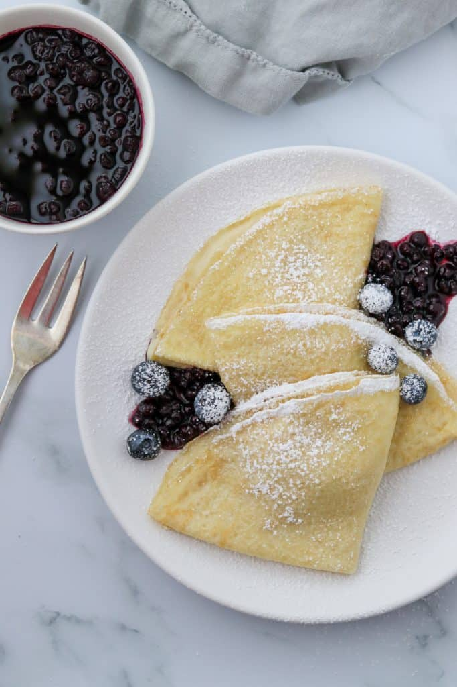
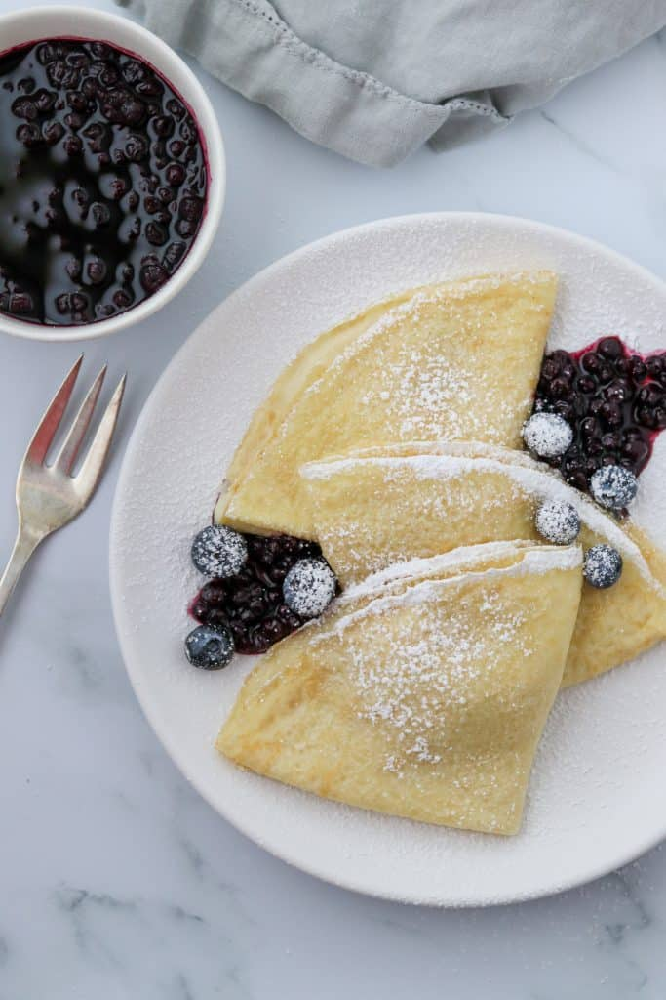

Double Chocolate Cookies
Origin: North America Source: sugar greek receipe Category: Dessert
My daughter learned to make these cookies at a baking camp at Zingermanns and has tweaked the recipe to fit the taste buds of her siblings. They are extremely sugary so the salt helps to balance it. Note, these cookies are best eaten very quickly.
Recipe Ingredients
- Unsalted butter
- Granulated Sugar
- Packed light or dark brown sugar
- Large egg
- Pure vanilla extract
- Semi-sweet chocolate chunks (melted)
- All-purpose flour
- Natural unsweetened cocoa powder
- Baking soda
- Salt
- Semi-sweet chocolate chunks
Recipe Steps
- In a mixing bowl cream together the butter, granulated sugar, and brown sugar
- Add the egg and vanilla extract and beat well
- Add the melted chocolate
- In a separate bowl combine the flour, baking soda, cocoa powder and salt
- Combine the wet and dry ingredients
- Add the unmelted chocolate chunks.
- Form 15 cookies and place on a baking sheet.
- Cook for 12 to 13 minutes at 350 degrees.
Additional Food images
 
Steamed eggs
Origin: China Source: webpage China Sichuan Food Steamed egg Category: Breakfast Perfect Chinese steamed egg. Soft, smooth, and tender steamed egg (蒸鸡蛋) is a comforting food for lots of Chinese children and a time-saving dish for house cooks. We love to make steam a small bowl of eggs and serve it as a side dish or make a large bowl and share it with the whole family.
Recipe Ingredients
- salt
- Eggs
- light soy sauce
- warmm water
- scallion chopped
Recipe Steps
- Add salt to the egg and gently whisk eggs. And then pour in warm water. Combine well.
- Transfer the strained egg liquid into small bowls. Remove any bubbles on the surface if there are any. If you are using a large plate, then simply strain the egg liquid to the plate.
- Set up the steamer, bring the water to a boil, and slow down the fire to simmer for 9 to 12 minutes depending on your container.
- Remove from the fire and wait for 5 minutes to cool down a little bit. Transfer the containers out. Drizzle some sesame oil and light soy sauce and garnish with chopped spring onion on top.
Additional Food Image


Guacamole
Origin: Mexico Source: webpage downshiftology with Lisa Bryan Category: side dishes Authentic guacamole does not contain fillers and unnecessary ingredients. All you need is avocados, onion, tomatoes, cilantro, jalapeno pepper, lime juice, garlic, and salt. Easy and delicious!
Recipe Ingredients
- cilantro
- avocados
- lime
- garlic
- onions
- tomatoes
- jalapeno pepper
Recipe Steps
- Slice the avocados in half, remove the pit, and scoop into a mixing bowl.
- Mash the avocado with a fork and make it as chunky or smooth as you’d like.
- Add the remaining ingredients and stir together. Give it a taste test and add a pinch more salt or lime juice if needed.
- Serve the guacamole with tortilla chips.
Additional Food Image


Swedish Pancakes
Origin: Swedend Source: Kristi at True North Kitchen Category: Breakfast
Swedish pancakes (Pannkaka [singular] or Pannkakor [plural] in Swedish) are one of the most well-known Scandinavian delicacies, and rightfully so. Tender, buttery and often served with butter and lingonberry jam, there is much to account for their popularity.
Recipe Ingredients
- Butter
- Eggs
- Sugar
- Vanilla
- Milk
- Water
- Salt
- Flour
Recipe Steps
- Combine all ingredients in a blender and blend until completely smooth.Transfer to the refrigerator to rest for at least 2 hours or up to 2 days.
- Preheat oven to 200 degrees if you plan to eat the pannkakor right away. Heat a 10 inch nonstick skillet over medium heat. Stir the batter briefly to recombine. Brush skillet with melted butter. Pick the skillet up off of the burner and quickly add ¼ cup of batter. Immediately begin swirling the batter around the skillet so that it coats the bottom of the pan. Continue swirling until the batter is just set. Return skillet to the burner. Cook until the pancake is golden brown in spots on the bottom, about 30 seconds. Use a thin spatula to loosen the pancake, flip it over continue to cook on the other side for about 30 seconds. Transfer to a plate. Cover with foil and transfer to oven to keep warm and repeat with remaining batter, wiping out skillet in between pancakes with paper towel as needed.
- Serve with lingonberry jam and butter (see note below) or other desired toppings and/or fillings. See notes below for more information about making ahead of time and storing in the refrigerator or freezer.
Additional Food Image
 

Coca-Cola Chicken Wings
Origin: China Source: Family Recipe Category: Main Dish
I learnt how to cook Coca-Cola chicken wings from my mother, and I've since tweaked her recipe to better suit my family's palate, making it less sweet. While the cooking process remains straightforward, the result is incredibly flavorful, and once you've tried it, you'll understand its delicious appeal!
Recipe Ingredients
- Chicken wings
- Scallions
- Ginger slices
- Cooking wine
- Dark soy sauce
- A can of coke
Recipe Steps
- Wash and place chicken wings in a bowl
- Add scallions, ginger slices, cooking wine, dark soy sauce and salt to the washed chicken wings, and mix them well
- Cover the bowl with plastic wrap and marinate the chicken wings for 1 hour
- Put the right amount of oil in the pot, and put the marinated chicken wings into the pot and fry it until golden brown on both sides
- After fry the chicken wings until golden brown on both sides, then pour a can of coke into the pan and bring to a boil
- Continue to cook for an additional 2-3 minutes until the glaze has thickened and coats the wings nicely
- Transfer the Coca-Cola glazed chicken wings to a serving platter
Additional Food Images